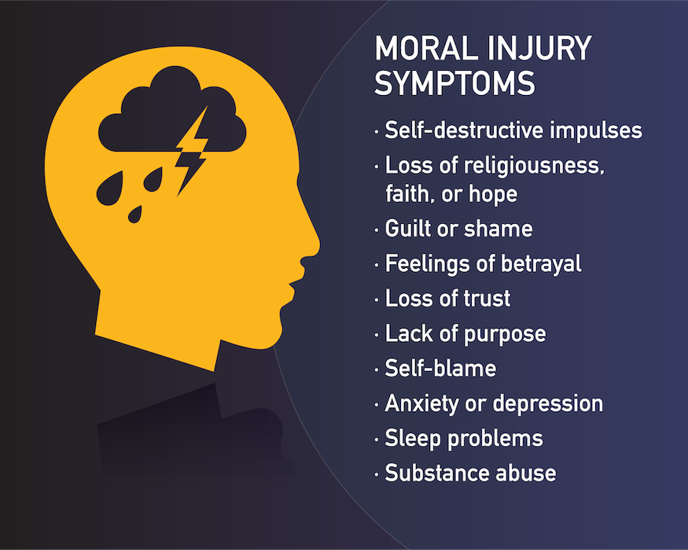

Moral Injury Institute quote:
“Moral Injury is emotion-based and is defined by feelings of guilt, shame, remorse, anger despair, mistrust, loss of meaning, isolation; is connected to other behavioral issues that are persistent and pervasive and is often associated with traumatic experiences.”
Moral Injury Institute, defines moral injury as
Witnessing whether in person, through reporting, or some other means something that causes a crisis of conscience due to a violation of one's deeply held moral, religious, or ethical beliefs such that one psychically suffers in a materially adverse way.
Moral Injury is the injury to a person's moral consience. The result of betraying your personal moral code can become profound internal suffering. Although moral injury is usually associated with the military and veterans, it also effects sexual assult survivors, abuse victims, docotrs, nurses, law enforcement officers, incarcerated people, Alzheimer's caregivers and veterinarians.
